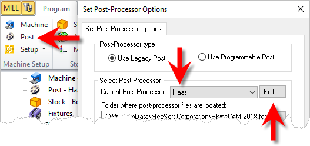
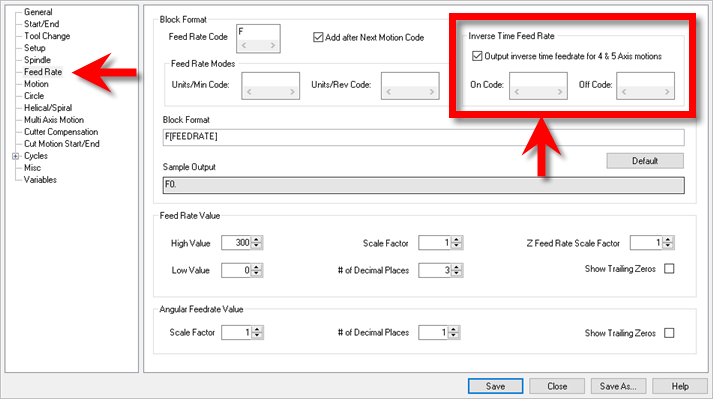

You do not need to edit your toolpath operations to output the Inverse Time Feedrate format! It is done automatically once it is enabled in your post processor. Follow these steps to enable the Inverse Time Feedrate format in your post:
1.From the Program tab under Machine Setup, select the Post icon to display the Set Post-Processor Options dialog.
2.For Current Post Processor, select your post.
3.Pick the Edit button to the right. This will display the Post-Process Generator dialog.
 Launch the Post-Process Generator |
4.From the left side pane, select the Feedrate section.
 Post-Process Generator / Feedrate / Inverse Time |
5.On the right side pane, under Block Format, check the box next to "Output inverse time feedrate for 4 & 5 Axis motions".
6.For On Code, enter G93.
7.For Off Code, enter G94.
8.Pick Save As to save your (*.spm) post.
|
9.With your revised post set as your Current Post Processor, pick OK to close the Set Post-Processor Options dialog.
|
10.Test the revised post with a sample 4 or 5 Axis toolpath operation.